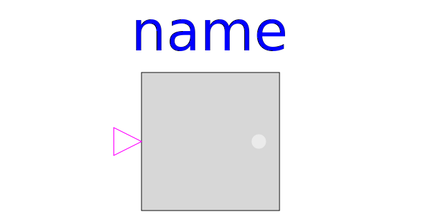

.
Modelica
.
Blocks
.
Interfaces
.
PartialBooleanSISO_small
Information
Partial block with a BooleanInput and a BooleanOutput signal and a small block icon
Generated at 2019-01-24T09:03:13Z by
OpenModelica 1.14.0~dev-130-gefa44fb